Pravotkotno / Tangenta
Toolbar / Icon:

Menu:
Risanje - Črta - Pravotkotno / Tangenta
Shortcut:
L, N
Commands:
lineorthogonaltangent | orthotangent | ln
Opis:
Konstroira črto, ki je pravokotna na eno črto ter tangencialna na lok, krog ali elipso.